La indecisión es la llave a la
flexibilidad
|
|
||
|
La indecisión es la llave a la
flexibilidad |
|
|
|
********************************************************************************************* Newer news can be found on scotlandnews |
| The (mighty) Rio Futaleufu, March 14-17, 2005. |
********************************************************************************************* 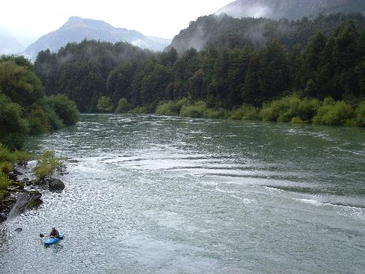 The (mighty) Rio Futaleufu is the furthest south that our trip will hit the water. March in Chile is, frankly, chilly. We roll into town at the end of the kayaking season on Saint Patrick's Week. Appropriately, the water is higher than it's been all season, according to the rafting company we spoke with, as they got off the river early. We had a wild time, running the classic 'Bridge-to-Bridge' section several times and down to El Makal on the highest of the high water day. Luck o' the Irish we managed to escape unbattered, with our eyes out on stalks. The river is a big volume classic with huge crashing waves, big raft-eating holes, and a scary pourover rapid known simply as 'Pillow.' Here's Xavier styling the line and wondering how he got mixed up with these Irish guys. 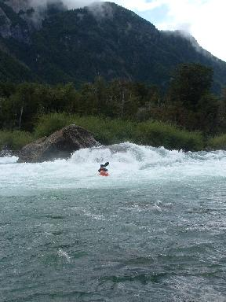 A pair of aul lads, freezing in the campsite. Simon has a cold and has taken to wearing his thermals around his neck to keep warm. Ferg is complaining that his shoulder is in pain. Crocks, the pair of them. The team witchdoctor recommends a course of paragliding in the Atacama Desert, further north where it's nice and toasty. 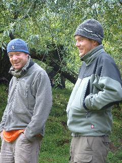 Here's Jim and Xavier about to disappear into 'Mas o Menos' rapid. It scared them sufficiently that they got out to inspect the next rapid - 'Casa de Piedras.' Good move really. 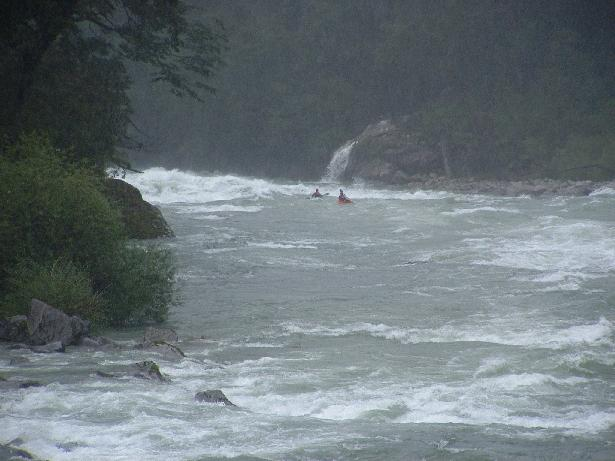 The (mighty) Rio Futaleufu is set in one of the most beautiful valleys the trip has seen. We left town on Saint Patrick's Day after holding the First Annual Futaleufu Saint Patrick's Day Parade and squeezing in a quick game of table tennis with the Chilean border police. 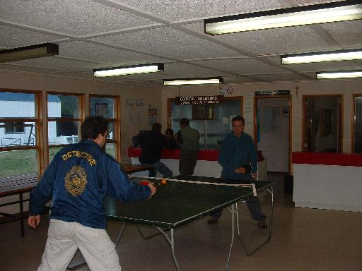 |
| Guatemalan Jesus leaves on missionary work, March 12, 2005. |
********************************************************************************************* Sometime late on the night of March 12 in Bariloche, Argentina, when we were out partying, some thieves broke into our van by smashing an unlocked window. The van was mostly empty, so they took Mr. Fred's glasses and our CD player and disks. �Que malo! Guatemalan Jesus at his usual post pointing the way forward from the dashboard, decided that the thieves were in greater need of His guidance than we were, so He opted to walk the Path of Perdition with them. This is our last photo of Him. 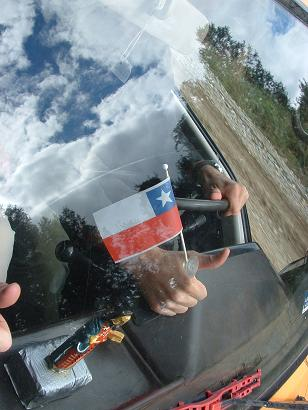 |
| Rio Manso, March 12, 2005. |
********************************************************************************************* Taking a break from Chilean waterfall jumping, we jump a big waterfall in Argentina. Even here the bureaucrats try to stall our ball by demanding a permit to run the river and closing the road for an hour or so. We compromise by running La Cascada de Los Alerces at the put-in for the usual run. This wasn't the biggest drop of the trip, but easily the longest time any of us have inspected a drop and still run it. After a bout of rock-paper-scissors, Jim was first to go. It's fairly lonely in the eddy above this drop. Nice, quiet, and you don't really want to ferry out of there. 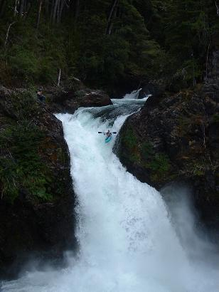 Halfway down he hit something solid and broke his paddles, at the bottom his deck imploded, resulting in a swim. Three out of four hit something on the way down. After successfully running the drop, Xavier was happy to sign the park ranger's waiver. 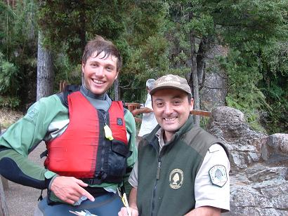 |
| Chile-Argentina border crossing, March 10, 2005. |
********************************************************************************************* Having procured the necessary document from the car dealer by fax, we proceed unhindered into Argentina. Officials at border crossings are obsessed with kayaks here - everytime the kayaks are registered on our tourist cards and we are admonished not to try and leave the country (Chile or Argentina) without them. The paragliders, worth four times as much, pass without mention. Onwards to Bariloche. |
| Rio Gol Gol, Chile, March 9, 2005. |
********************************************************************************************* Who could pass up the opportunity to paddle a river with such a 'say-out-loud' name? Rio Gol Gol, Rio Gol Gol, Rio Gol Gol. The put-in is on a side creek right at the Chilean customs post, which is bizarrely situated 30 km inside the border. we parked right at the barrier, get permission to walk through the customs area, and put on. 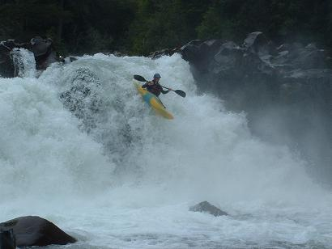 This time there was no thermal heating of the river and the drops were bigger and more committing. We had some great lines and some frankly poor lines. One relatively innocuous-looking drop claimed two victims - first Alaskan Xavier plugged the centre line and got worked before swimming and going deep, very deep. Then Simon sent his boat and paddle down the centre line and butt-boofed the river-left line. Further into the river the feeling that we had used up all our luck for the day was compounded by Jim squishing a spider in his boat. The team retreated from the sketchy drop with the nasty river-left and river-right matching undercuts, and didn't even look at Salto de Indio. 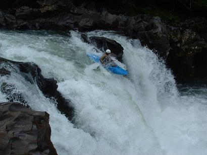 Later that evening the damn Chilean bureaucrats stymied us once again. This time we couldn't leave Chile without some other document relating to the recently-purchased car. The German influence is strong in Chile - there are rules and that's the way it is. They simply go by the rulebook without sorrow or joy or even offering possible solutions. You cannot pass, that is all; Next!. |
| Rio Fuy, Chile, March 7-8, 2005. |
********************************************************************************************* Finally getting out of Pucon, we begin the long journey to the Rio Futaleufu, the most southerly kayaking destination of our trip. On the way we stop at the Rio Fuy, a thermally-heated waterfall special. The waterfall section is like a beginner's guide to waterfall jumping - all the drops are clean, the highest is about four metres, the water is warm, and the whole run a couple of hundred metres in length. We ran it the evening we arrived and again in the morning. 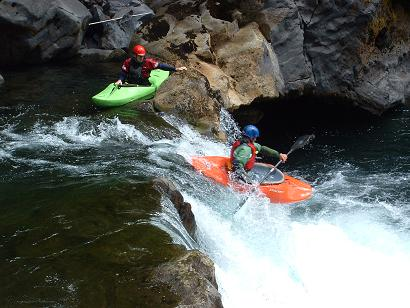 The 'learning' aspect of the run is essentially that you can experiment with different speeds, angles, and styles of landing, then go back and try something else. This was great, given the scary big waterfalls that lay ahead further south. Today was also Ferg's 28th birthday. We are not certain, but it may in reality be his 40th birthday, given the decrepitude into which he has fallen. The man's a shambles - dodgy knee, dodgy shoulder, general alround old-man way of going on. Due to a technical mix-up, Ferg's advancement into dotage wasn't celebrated until Thursday in Bariloche. Forgetting things already. |
| More video! |
********************************************************************************************* The hardest-working video-editing team currently driving a yellow school bus in southern Chile brings you this footage... Watch in terror as the boys mess up drop after drop! Recoil in horror at the amateur face surgery! Grimace at the depth-probing muppetry! Click here... Chilean Red video |
| Rio Palguin, Chile, March 4, 2005. |
********************************************************************************************* The Rio Palguin is the waterfall classic river in Chile. It's broken down into three sections, imaginatively called Upper, Middle, and, surprise surprise, Lower. Each section is only about two km long, but it took us about four hours to run the Upper and Middle, because there was a lot to scout, video, and photo. It was one of those drives to the put-in when no-one talks very much, having read too many horror stories about huge drops, undercut caves, and committing gorges. Thankfully, it was also one of those days on which you get your groove on early enough and then it's happy days. Ferg at the lip of the first drop of the Upper Palguin. This is the smallest drop. 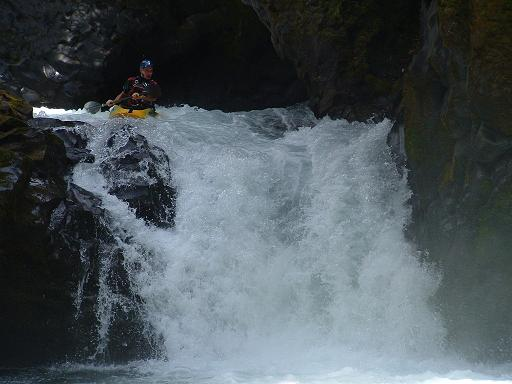 Here's Simon running the right channel of another drop. 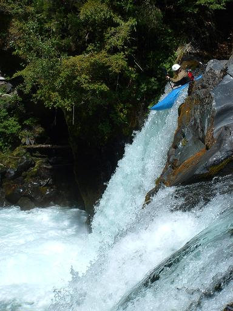 Ferg practices keeping his paddles dry on a particularly narrow slot. 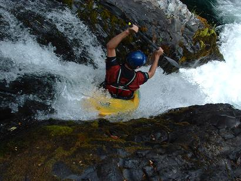 One of the drops is so heinous that it's called The Portage. Here is Simon about to complete the portage by jumping 13 m into the boil. Jim and Ferg wussed by abseiling. 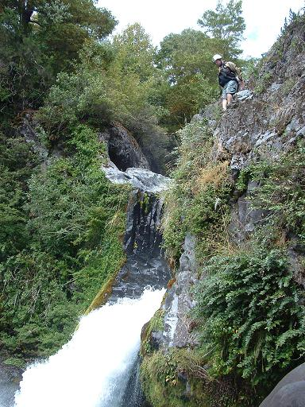 On the Middle Palguin, which is a straight continuation from the Upper, Jim starts left, drives right, across the first part of the double drop... 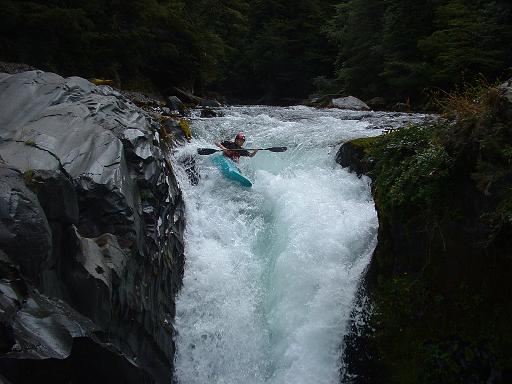 ...and into the short pool... 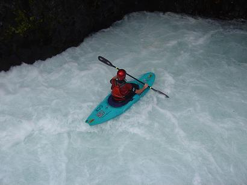 ...before the second part - a sloping ramp of about 10 m. 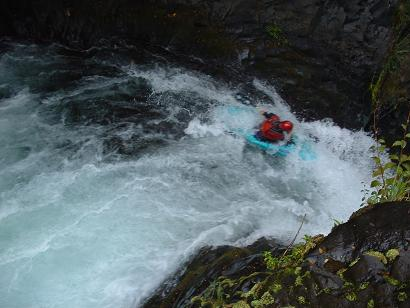 Simon on the final drop, which is about 13 m. 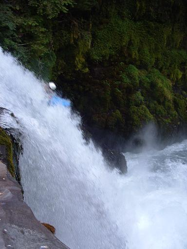 Sorry about the blurry photo - here's what it looks like from below. 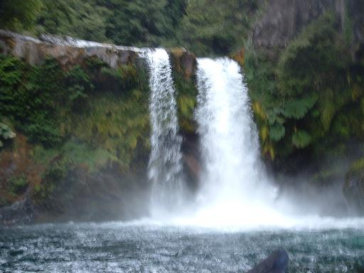 Simon nailed the line, and the line nailed his head. Not a pretty sight. Jim, on the other hand, completely fluffed the line, 'airblunting' into the curtain, blew his deck on impact, but paddled away unscathed. No justice. |